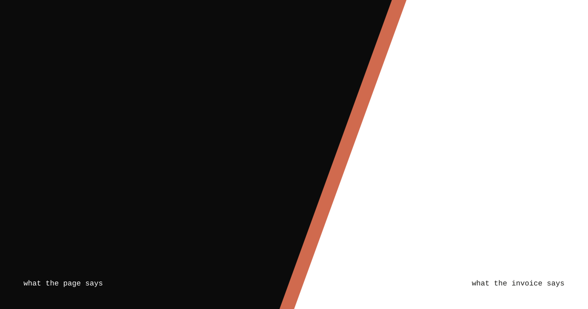
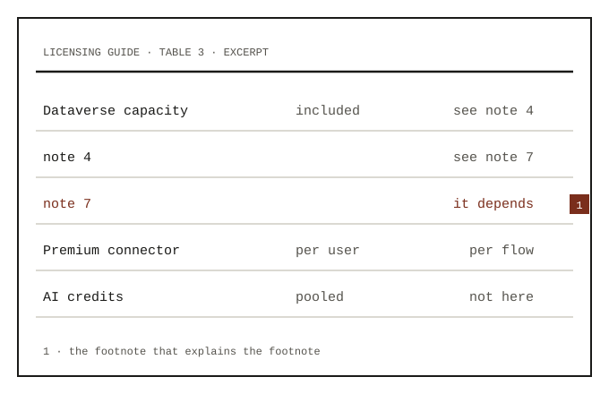
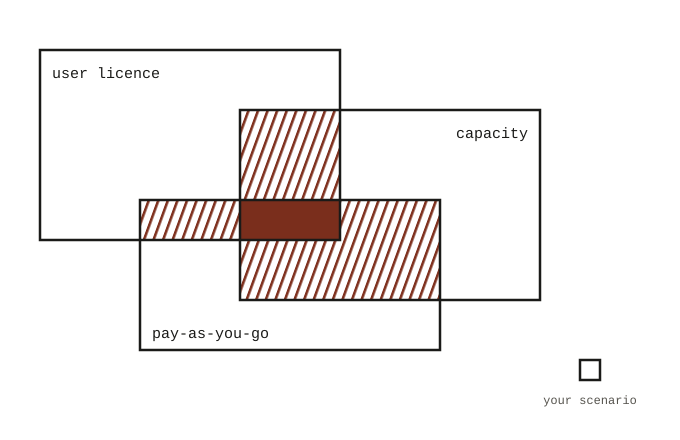
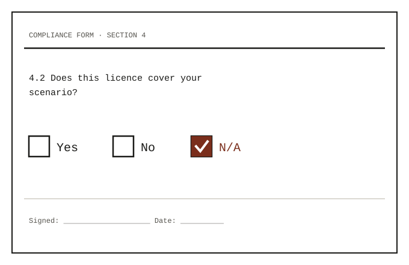
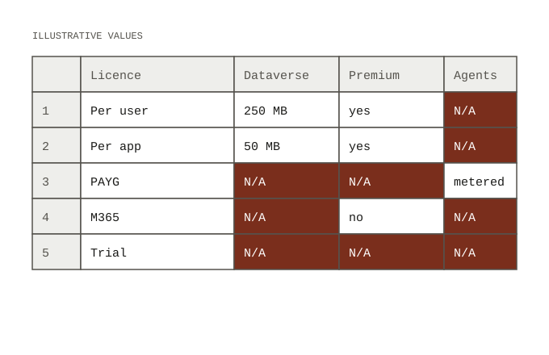
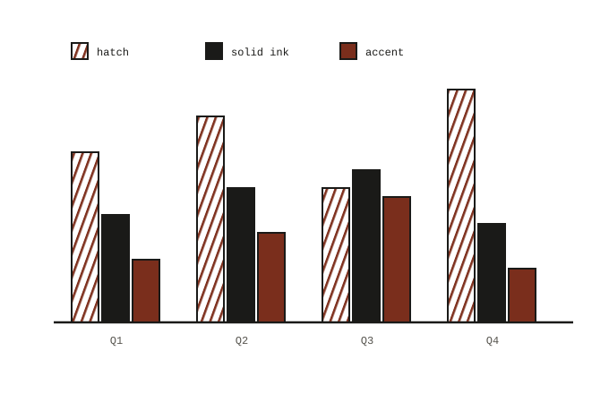

The spice kit
A few pieces of N/A identity that drop into any page. They read the brand tokens, so switching the brand above recolors all of them.
Window
A frame with a hatched offset. The three below are the same component with different text. Use one per view.
Capacity is metered in three places. The portal shows you none of them.
0 MBincluded
of Dataverse capacity on the trial. Check what the footnotes say.
Cut
A field split on the slash. A masthead, a section divider, a cover.
Glyph
A quiet mark behind a header. Decorative only. The starter set is provisional: §, ∅ and ≠ drawn on the slash, and a question mark.
Included, with conditions
The glyph sits behind the heading at watermark strength and never touches the reading.
Vendor claim ≠ what you can buy
The accent tint is for one header, not every section.
Section 4.2
Typeset glyphs come from the display face.
Hatch
A fill, for strips and for chart series that should differ by fill type instead of by another hue.
Artifacts
Generated SVGs from assets/artifacts/. Used as images they show the default or dark fallback colors; inlined, they follow the brand tokens.





